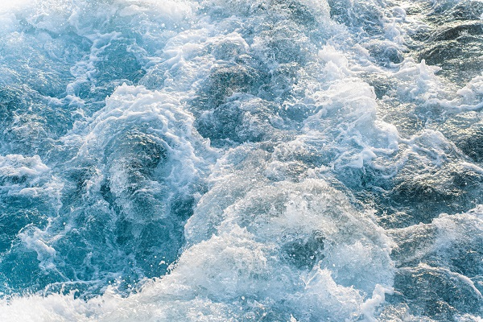
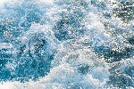
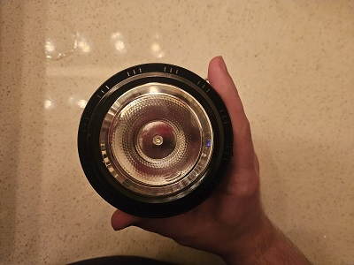
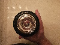

The original 6000x4000 image, downsized to fit in this site.
Proper Reduction of Image with Editor

A proper downscale to the same size done in an image editor.
Improper Image Proportions with CSS
33% less width than usual. The image appears squished to be more narrow.66% less width than usual. The image is extremely squished.33% less height than usual. The image appears squished to be shorter.66% less height than usual. The image is extremely squished.
Improper Enlarging with CSS
The original downscale for reference.

A 60x40 downscaling of the image, blown up to fit the same size. The image appears grainy.
Manipulating a Perfect Circle (Lantern)
A perfectly circular flashlight, held by a visible thumb and finger for a more subjective shape. Image taken by myself. 4000x3000, 3.7MB
The original 4000x3000 image, downsized to fit in this site.
Proper Reduction of Image with Editor

A proper downscale to the same size done in an image editor.
Improper Image Proportions with CSS
33% less width than usual. The image appears squished to be more narrow.66% less width than usual. The image is extremely squished.33% less height than usual. The image appears squished to be shorter.66% less height than usual. The image is extremely squished.
Improper Enlarging with CSS
The original downscale for reference.

A 100x75 downscaling of the image, blown up to fit the same size. The image appears grainy.